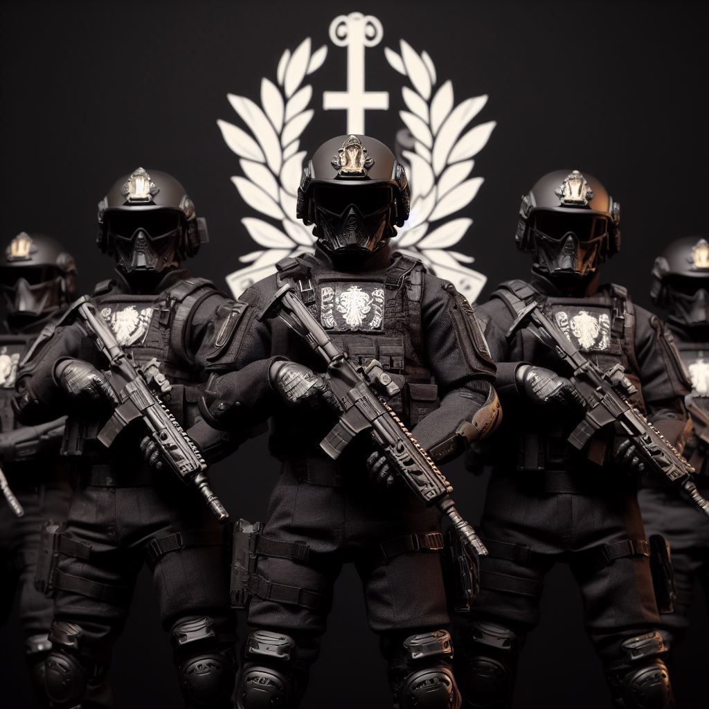
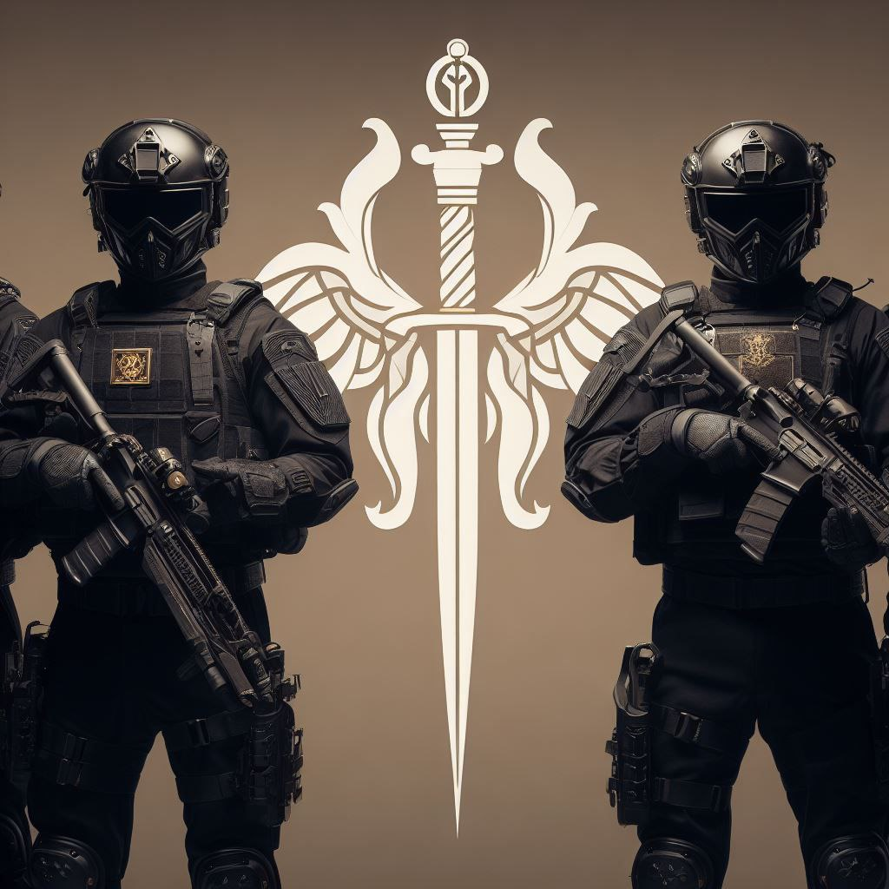
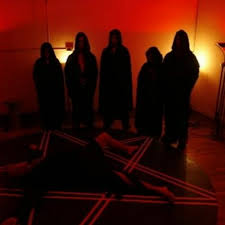
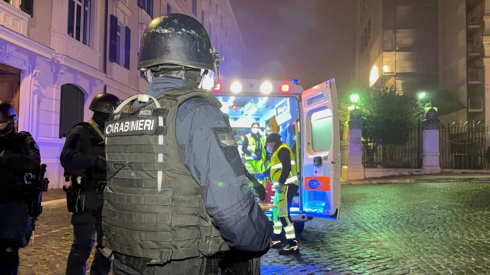
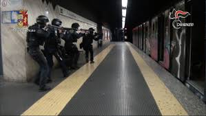

Roma, 24 Maggio 2023 - La capitale italiana è stata teatro di un'operazione di polizia senza precedenti nella giornata del 22 maggio, quando un'ampia serie di azioni coordinate tra diversi reparti di polizia e carabinieri ha portato alla luce l'esistenza di una setta satanica. Questo gruppo, operante nelle strade di Roma, è stato scoperto mentre si dedicava a pratiche criminali che includono il traffico di esseri umani e lo spaccio di sostanze illecite, aggravate da tattiche intimidatorie e metodi mafiosi. Le indagini hanno rivelato che la setta potrebbe essere coinvolta in rituali satanici, con sacrifici che coinvolgerebbero sia animali che esseri umani. Le zone di Mezzo Cammino, Labaro, Tor Lupara e Pomezia sono state il palcoscenico di queste macabrescoperte, seguite da retate che hanno portato a numerosi arresti. Gli scontri a fuoco avvenuti durante le operazioni hanno causato decine di feriti, con un bilancio stimato di circa cinquanta membri delle forze dell'ordine colpiti. Questo evento ha scosso la comunità romana, lasciando dietro di sé molte domande senza risposta e una crescente preoccupazione per la sicurezza nella Città Eterna. Mentre le autorità rassicurano di avere fermato questa setta, e di aver creato un gruppo apposito per fermare attività di questo tipo,la quale desta polemiche e perplessità essendosi avvalsi anche di guardie svizzere vaticane come esperti, la popolazione di Roma rimane in attesa di ulteriori sviluppi.
    